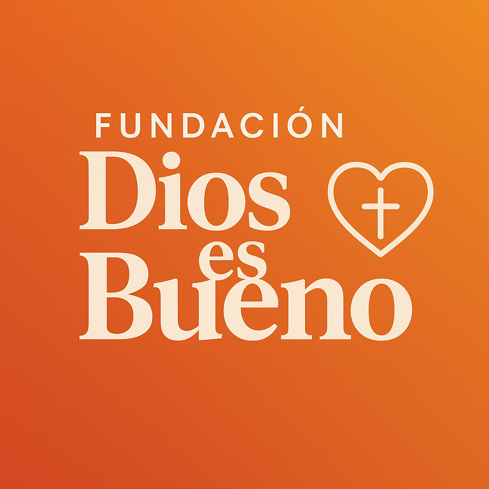

Proposito de esta fundacion
En la Fundación Dios es Bueno, trabajamos con el firme propósito de transformar vidas a través del amor, la fe y la solidaridad. Nuestra misión es brindar apoyo integral a comunidades vulnerables, promoviendo valores cristianos, oportunidades de desarrollo y esperanza en cada acción. Nos enfocamos en atender necesidades básicas, fomentar la educación, y acompañar espiritualmente a quienes más lo necesitan, convencidos de que con pequeños actos de bondad podemos lograr grandes cambios.

¿Por qué nace la Fundación Dios es Bueno?
La Fundación Dios es Bueno nace del deseo de servir y llevar esperanza a quienes enfrentan momentos difíciles. Somos una organización sin fines de lucro dedicada a ofrecer ayuda humanitaria, acompañamiento espiritual y herramientas que impulsen el bienestar integral de las personas. Creemos que la bondad es el reflejo más puro del amor de Dios, y cada uno de nuestros proyectos está inspirado en ese principio.
Acciones que Transforman
Trabajamos en distintas áreas como distribución de alimentos, jornadas médicas, apoyo educativo, y actividades de orientación espiritual. A través de alianzas con voluntarios, iglesias y empresas solidarias, llevamos alivio y oportunidades a quienes más lo necesitan. Cada proyecto está diseñado para impactar de forma directa y sostenible la vida de niños, adultos y comunidades completas.
Sé Parte del Cambio
Tu apoyo puede marcar una gran diferencia. Puedes colaborar como voluntario, hacer donaciones, compartir nuestros proyectos o simplemente orar por las personas a las que servimos. En la Fundación Dios es Bueno, cada gesto cuenta y juntos podemos seguir llevando luz donde más se necesita. Únete a esta misión de amor y servicio.